<!DOCTYPE lake>
<h2 data-lake-id="PFF6K" id="PFF6K"><span data-lake-id="u628dcfee" id="u628dcfee">下载</span></h2><p data-lake-id="udfaceea4" id="udfaceea4"><span data-lake-id="u8cacd0ce" id="u8cacd0ce">下载地址：</span><a data-lake-id="ub5e13960" href="https://www.keil.com/download/product/" id="ub5e13960" rel="noopener noreferrer" target="_blank"><span data-lake-id="u0eec0f79" id="u0eec0f79">https://www.keil.com/download/product/</span></a></p><h3 data-lake-id="Mjcn8" id="Mjcn8"><span data-lake-id="u74db7933" id="u74db7933">选择ARM版本</span></h3><p data-lake-id="uee5f0a67" id="uee5f0a67">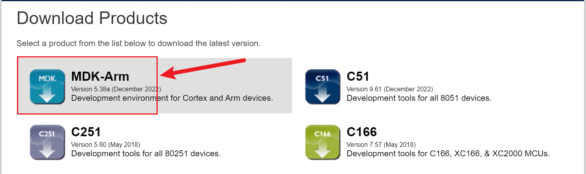</p><p data-lake-id="ub1f419e3" id="ub1f419e3"><span data-lake-id="ubedf5384" id="ubedf5384">如上图选择</span><code data-lake-id="uafc56854" id="uafc56854"><span data-lake-id="u3f918da5" id="u3f918da5">MDK-Arm</span></code><span data-lake-id="u2d8c555a" id="u2d8c555a">版本</span></p><h3 data-lake-id="hkT6P" id="hkT6P"><span data-lake-id="uc9f57f05" id="uc9f57f05">填写信息</span></h3><p data-lake-id="u380ba8dc" id="u380ba8dc">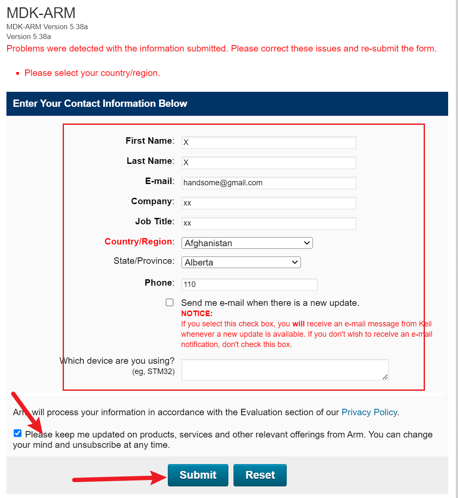</p><p data-lake-id="u054686bb" id="u054686bb"><span data-lake-id="udbe56214" id="udbe56214">如上图，信息随意填写，只要能通过即可。</span></p><h3 data-lake-id="f9iMC" id="f9iMC"><span data-lake-id="ua6d148ae" id="ua6d148ae">下载</span></h3><p data-lake-id="u72735260" id="u72735260">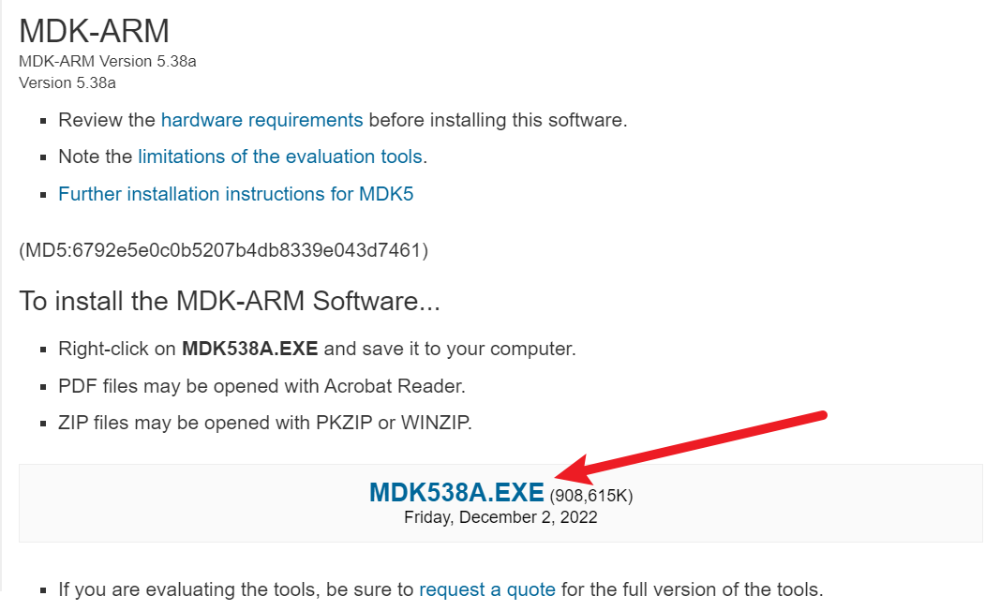</p><p data-lake-id="ud9e9b983" id="ud9e9b983"><span data-lake-id="u1701ade8" id="u1701ade8">点击下载链接即可</span></p><p data-lake-id="u0be25fcc" id="u0be25fcc"><br/></p><h2 data-lake-id="RVRUM" id="RVRUM"><span data-lake-id="ud21bab70" id="ud21bab70">安装</span></h2><p data-lake-id="u2bed2def" id="u2bed2def"><span data-lake-id="uaa587034" id="uaa587034">双击exe文件进行安装。</span></p><p data-lake-id="uf1bc4c3f" id="uf1bc4c3f">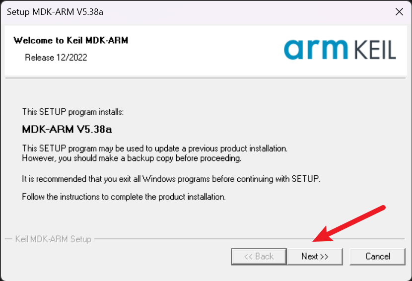</p><p data-lake-id="u9d3ad530" id="u9d3ad530">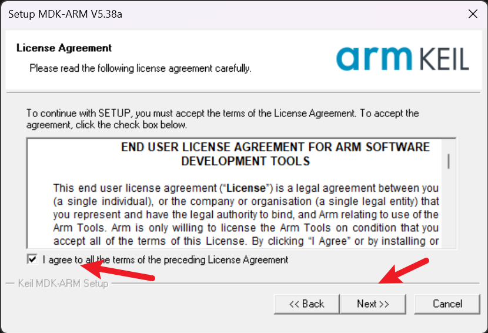</p><p data-lake-id="ubf1a6598" id="ubf1a6598">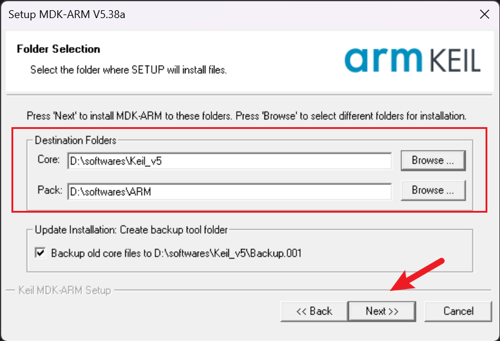</p><p data-lake-id="u41dda29b" id="u41dda29b"><strong><span class="lake-fontsize-14" data-lake-id="ucc53bac5" id="ucc53bac5" style="color: #DF2A3F">Core目录和Pack目录不要出现嵌套情况</span></strong></p><p data-lake-id="ua27958fd" id="ua27958fd"><span data-lake-id="u7e3ebf5c" id="u7e3ebf5c">​</span><br/></p><p data-lake-id="u2f49c9ef" id="u2f49c9ef"><span data-lake-id="u54b6e1c9" id="u54b6e1c9">后续步骤下一步即可。</span></p><h3 data-lake-id="FJGtG" id="FJGtG"><span data-lake-id="u0ee4d47c" id="u0ee4d47c">特别注意</span></h3><p data-lake-id="u5814616e" id="u5814616e"><span data-lake-id="u0cd962f3" id="u0cd962f3">上面步骤中，两个需要指定的Destination Folders目标文件夹</span><code data-lake-id="u736a1165" id="u736a1165"><span data-lake-id="uca8dd1cf" id="uca8dd1cf">Core</span></code><span data-lake-id="u265f774b" id="u265f774b">和</span><code data-lake-id="ud5735e73" id="ud5735e73"><span data-lake-id="u6d9bce18" id="u6d9bce18">Pack</span></code><span data-lake-id="uaa518e78" id="uaa518e78">注意事项：</span></p><p data-lake-id="u70dbf992" id="u70dbf992"><code data-lake-id="u6fe7af20" id="u6fe7af20"><span data-lake-id="u027e46c3" id="u027e46c3">Core</span></code><span data-lake-id="u7360019c" id="u7360019c">目录：</span></p><p data-lake-id="uee41d31a" id="uee41d31a"><span data-lake-id="ufddd8150" id="ufddd8150">举例：</span></p><ul list="uae4826e1"><li data-lake-id="u582fab08" fid="u3c1ab5ea" id="u582fab08"><code data-lake-id="ud143cc47" id="ud143cc47"><span data-lake-id="u039e425d" id="u039e425d">D:\softwares\Keil_v5</span></code></li><li data-lake-id="u616b7d3a" fid="u3c1ab5ea" id="u616b7d3a"><code data-lake-id="ufa2490fa" id="ufa2490fa"><span data-lake-id="u92858642" id="u92858642">D:\Keil_v5</span></code></li></ul><blockquote class="lake-alert lake-alert-color4" data-lake-id="u50441aef" id="u50441aef"><p data-lake-id="u9613544b" id="u9613544b"><span data-lake-id="u8b286d46" id="u8b286d46">对于</span><code data-lake-id="u9f149edf" id="u9f149edf"><span data-lake-id="uda47ac88" id="uda47ac88">Core</span></code><span data-lake-id="u3cf70524" id="u3cf70524">目录，如果你已经安装了其他平台的Keil，例如C51的Keil。则需要把安装目录和之前C51的安装目录保持一致，否则会无法正常运行C51项目。</span></p></blockquote><p data-lake-id="u8c85b7f6" id="u8c85b7f6"><span data-lake-id="u11bf30e2" id="u11bf30e2">例如：我的</span><code data-lake-id="u7b0cea87" id="u7b0cea87"><span data-lake-id="u233d0d2e" id="u233d0d2e">C51的Keil</span></code><span data-lake-id="u8ba2f437" id="u8ba2f437"> 目录为</span><code data-lake-id="ua9faaaaa" id="ua9faaaaa"><span data-lake-id="ud02877ea" id="ud02877ea">D:\softwares\Keil_v5</span></code><span data-lake-id="u70152016" id="u70152016">(也就是在这个目录下会有一个C51的文件夹)，那么我在这里选择的Core目录也是</span><code data-lake-id="u277a2562" id="u277a2562"><span data-lake-id="u6f743380" id="u6f743380">D:\softwares\Keil_v5</span></code><span data-lake-id="u0f5131ee" id="u0f5131ee">，安装后，该目录下会多一个ARM文件夹。就可以同时开发C51和ARM了。</span></p><p data-lake-id="uacdb86cd" id="uacdb86cd"><span data-lake-id="u4d3dac47" id="u4d3dac47">​</span><br/></p><p data-lake-id="u1bd34410" id="u1bd34410"><code data-lake-id="u5888a6d6" id="u5888a6d6"><span data-lake-id="u4ebb949a" id="u4ebb949a">Pack</span></code><span data-lake-id="u264fd082" id="u264fd082">目录：选择一个磁盘比较富裕的目录即可。</span></p><p data-lake-id="ufec1ba48" id="ufec1ba48"><span data-lake-id="ueafb1caf" id="ueafb1caf">举例：</span></p><ul list="u76abac5c"><li data-lake-id="u51ab7a3e" fid="ub2942513" id="u51ab7a3e"><code data-lake-id="u383398b6" id="u383398b6"><span data-lake-id="u22536423" id="u22536423">D:\softwares\ARM</span></code></li><li data-lake-id="u6e27c532" fid="ub2942513" id="u6e27c532"><code data-lake-id="u42c113e3" id="u42c113e3"><span data-lake-id="ue7b0a222" id="ue7b0a222">D:\Keil_v5\Arm\Packs</span></code></li></ul><p data-lake-id="u492aca48" id="u492aca48"><br/></p><p data-lake-id="u927fe247" id="u927fe247"><span data-lake-id="ue5e6e01e" id="ue5e6e01e">这里有个目录选择</span><strong><span data-lake-id="u51a97ad0" id="u51a97ad0" style="color: #DF2A3F">大前提，两个目录都</span></strong><strong><span class="lake-fontsize-36" data-lake-id="u437b9edd" id="u437b9edd" style="color: #DF2A3F">不能出现中文和空格</span></strong><span data-lake-id="u980ee6b4" id="u980ee6b4">。</span></p><p data-lake-id="u492b5bbb" id="u492b5bbb">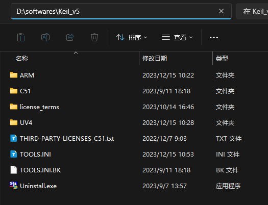</p><p data-lake-id="u690826d5" id="u690826d5"><br/></p><h3 data-lake-id="MMAgg" id="MMAgg"><span data-lake-id="u59be07fd" id="u59be07fd">弹出提示</span></h3><p data-lake-id="u867aeedf" id="u867aeedf"><span data-lake-id="u40ac1173" id="u40ac1173">遇到如下提示，点击</span><code data-lake-id="u80ce7691" id="u80ce7691"><span data-lake-id="uc7f1b716" id="uc7f1b716">安装</span></code><span data-lake-id="u35991945" id="u35991945">即可</span></p><p data-lake-id="u72303b16" id="u72303b16">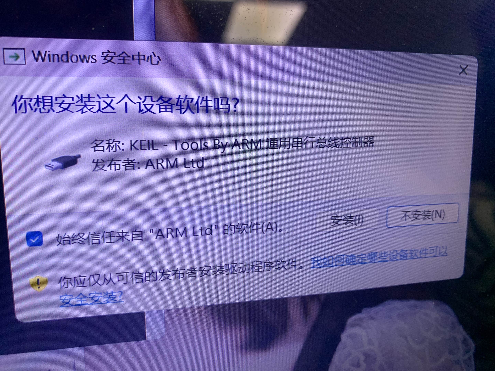</p><p data-lake-id="ubd1abd92" id="ubd1abd92"><span data-lake-id="u7c0bba98" id="u7c0bba98">提示替换，点击</span><code data-lake-id="uec1bb21a" id="uec1bb21a"><span data-lake-id="ud1fbdc76" id="ud1fbdc76">Replace All</span></code></p><p data-lake-id="u038d244c" id="u038d244c">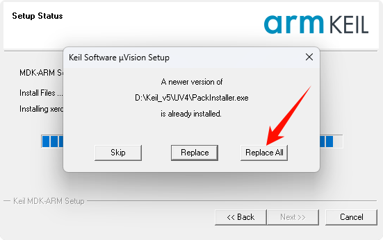</p><h3 data-lake-id="I8WEr" id="I8WEr"><span data-lake-id="u9f1757c1" id="u9f1757c1">打开Keil后</span></h3><p data-lake-id="u9d3761f2" id="u9d3761f2"><span data-lake-id="u3e1313d8" id="u3e1313d8">遇到这个</span><code data-lake-id="ue5bb0b4d" id="ue5bb0b4d"><span data-lake-id="udf9d91cc" id="udf9d91cc">Wait for Pack Installer</span></code><span data-lake-id="uca146c50" id="uca146c50">，直接点</span><code data-lake-id="ue8f07577" id="ue8f07577"><span data-lake-id="ua8fd6271" id="ua8fd6271">Stop Waiting</span></code><span data-lake-id="u2b6b525d" id="u2b6b525d">关掉即可。这个是搜索开发包过程，开发包的安装在下一小节讲解。</span></p><p data-lake-id="uad683f2f" id="uad683f2f">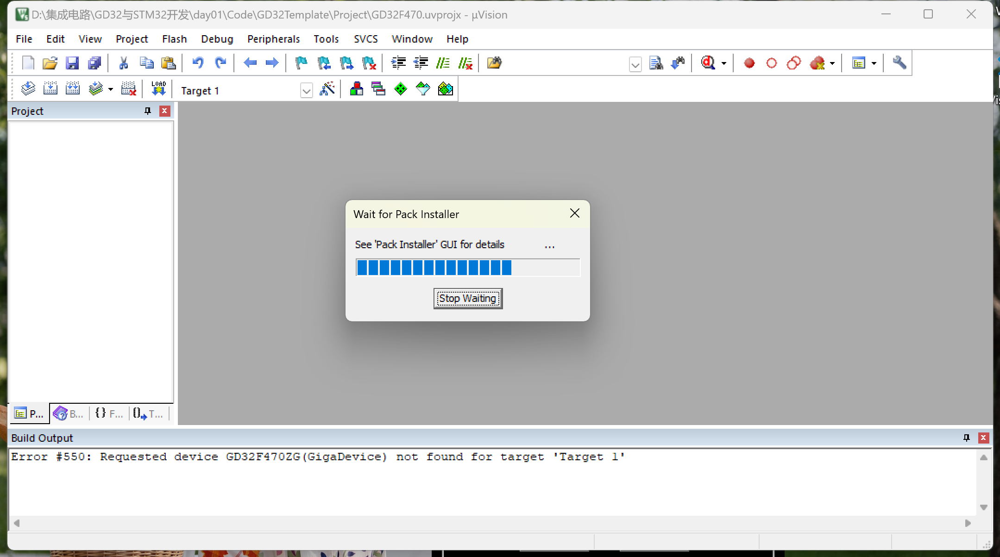</p><h3 data-lake-id="VBxGB" id="VBxGB"><span data-lake-id="u76cada66" id="u76cada66">ARM Compiler5</span></h3><p data-lake-id="u29bc37b7" id="u29bc37b7"><span data-lake-id="u662a7761" id="u662a7761">ARM Compiler5为非必须安装项，目前最新的编译环境为Compiler6，企业中存在使用Compiler5的情况。</span></p><ol list="u6eb1ba42"><li data-lake-id="ub99814a9" fid="u32042e8b" id="ub99814a9"><span data-lake-id="u1d6497fb" id="u1d6497fb">下载arm compiler支持包</span></li></ol><p data-lake-id="uea12694b" id="uea12694b" style="text-indent: 2em"><a class="yuque-card-link" href="../../_assets/5215e1d6981dd22683cfe5c6.zip">ARMCC.zip</a></p><ol list="uec77b47a" start="2"><li data-lake-id="u9a609a0d" fid="u60fbdfb7" id="u9a609a0d"><span data-lake-id="u5e431895" id="u5e431895">将</span><code data-lake-id="u234720fc" id="u234720fc"><span data-lake-id="ua4152fe4" id="ua4152fe4">ARMCC.zip</span></code><span data-lake-id="ue3dd3863" id="ue3dd3863">解压到keil安装目录下的ARM目录下</span></li></ol><p data-lake-id="ua9931b84" id="ua9931b84" style="text-indent: 2em">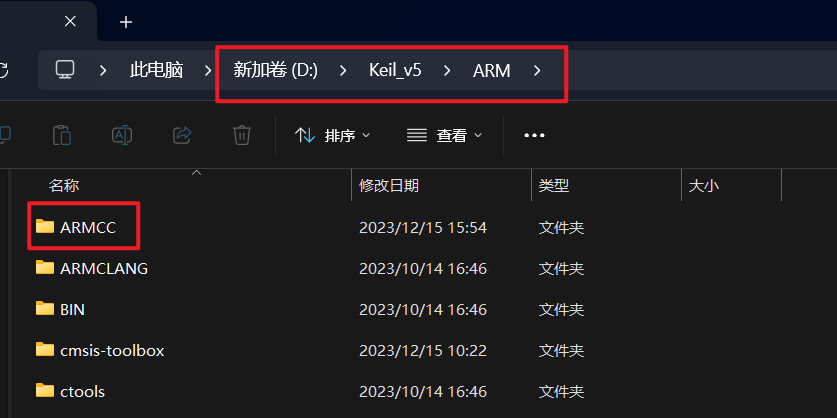</p><ol list="uabb6bd7c" start="3"><li data-lake-id="u1b971db9" fid="u829c3c9d" id="u1b971db9"><span data-lake-id="u61f2d7ff" id="u61f2d7ff">在keil中添加编译器</span></li></ol><p data-lake-id="u0c981028" id="u0c981028" style="text-indent: 2em"></p><ol list="ud855c24c" start="4"><li data-lake-id="ubda40d0b" fid="ub86f9224" id="ubda40d0b"><span data-lake-id="u3145f021" id="u3145f021">添加ARM Compiler</span></li></ol><p data-lake-id="u7db0a934" id="u7db0a934" style="text-indent: 2em">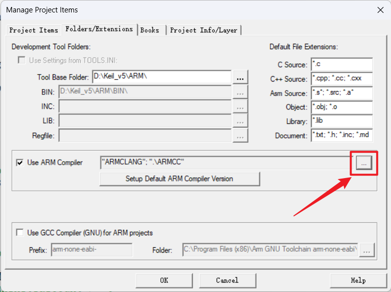</p><ol list="ud2582109" start="5"><li data-lake-id="u01202611" fid="u45cc8e52" id="u01202611"><span data-lake-id="uf0ff0c28" id="uf0ff0c28">点击添加</span></li></ol><p data-lake-id="u070c063e" id="u070c063e" style="text-indent: 2em"></p><ol list="uc45d3846" start="6"><li data-lake-id="u94038c77" fid="u741e1fa0" id="u94038c77"><span data-lake-id="u52cf199d" id="u52cf199d">选择刚才解压的目录</span></li></ol><p data-lake-id="ua8c25e70" id="ua8c25e70" style="text-indent: 2em">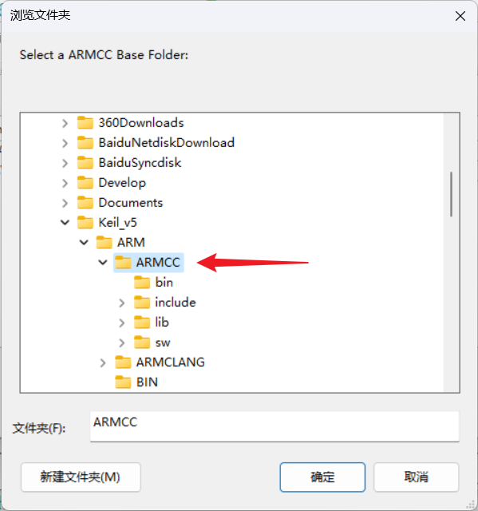</p><ol list="u67a6d8b0" start="7"><li data-lake-id="ua3996383" fid="u4daa6e85" id="ua3996383"><span data-lake-id="ucf87104e" id="ucf87104e">添加完成之后</span></li></ol><p data-lake-id="u761b59d0" id="u761b59d0" style="text-indent: 2em"></p><ol list="u70665b81" start="7"><li data-lake-id="u12ee993f" fid="u9d0472fc" id="u12ee993f"><span data-lake-id="u1975e5de" id="u1975e5de">安装完重启可以切换compiler5</span></li></ol><p data-lake-id="ua84bfcf1" id="ua84bfcf1" style="text-indent: 2em"></p><h2 data-lake-id="gFk0p" id="gFk0p"><span data-lake-id="uc947b0c4" id="uc947b0c4">Keil授权</span></h2><p data-lake-id="u9d597fb1" id="u9d597fb1"><span data-lake-id="ue98d3e2f" id="ue98d3e2f">通过正规渠道购买Keil版权。支持正版，从你我做起。</span></p><p data-lake-id="ue2b02610" id="ue2b02610"><br/></p>